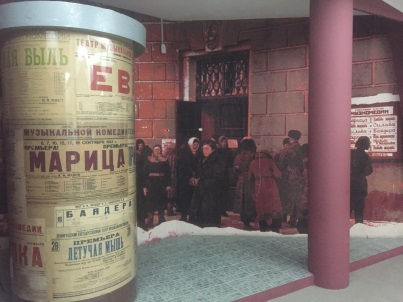
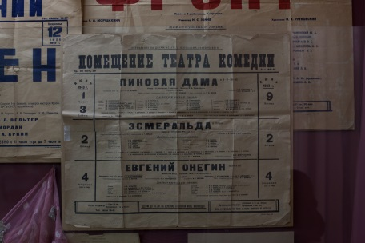
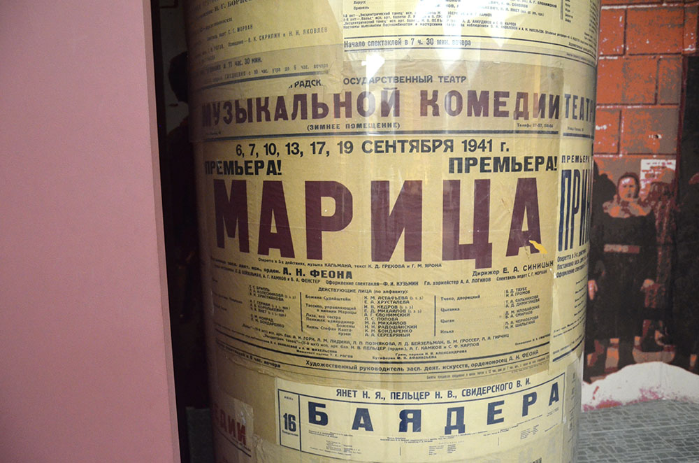
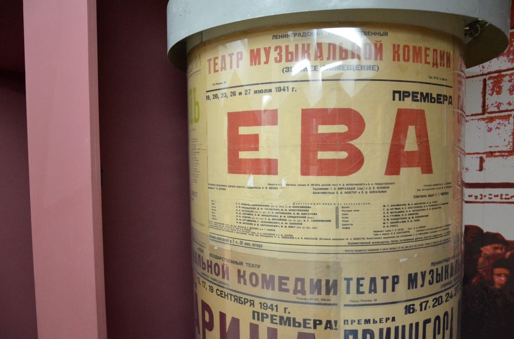
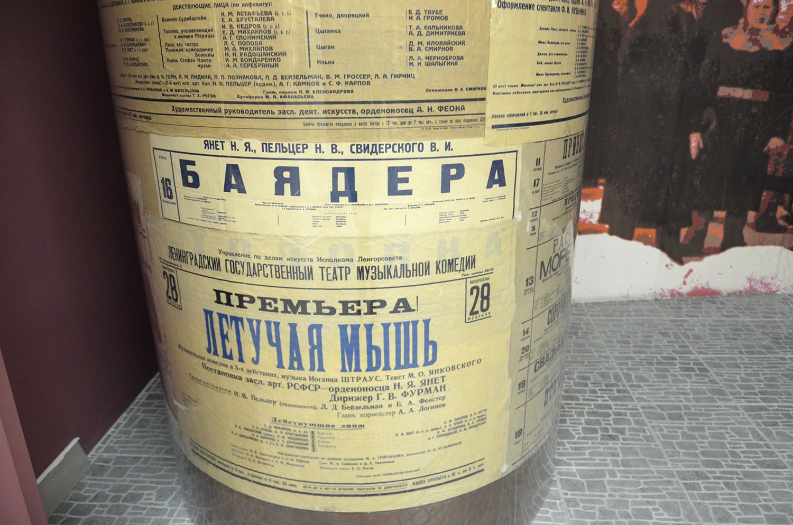

Задание 23. Рассмотрите подлинные афиши на тумбе. Какую информацию о театре военного времени вы получили? Докажите, что это афиши военного времени. Ответы на здание указывайте в форме ответа      Квест закончен. Вернуться на основную страницу сайта.